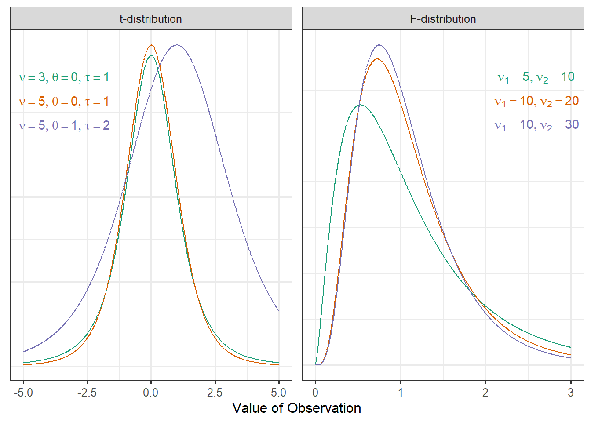

Appendix A — Approaches for Modeling Sampling Distributions
Throughout the text, we have alluded to various strategies for modeling the sampling distribution of a statistic. Here, we sketch out these methods in the context of a regression model. As modeling the data generating process provides a unifying framework, the approaches discussed in this appendix generalize to each of the models discussed in this text.
Throughout this appendix, we will assume the simple linear regression model
\[(\text{Response})_i = \beta_0 + \beta_1 (\text{Predictor})_i + \varepsilon_i\]
is appropriate for describing the data generating process. Further, all methods we discuss require that we impose the mean-0 and independence conditions. Specifically, we assume
- the average error is 0 for all values of the predictor, and
- the error in one observation is independent of the error for all other observations.
Additional constraints will be discussed as needed. We further assume we have a sample of size \(n\) from the population.
We note that all methods described in this section extend directly to the general linear regression model (Equation 21.3) and therefore extend to all models presented in the text.
A.1 Residual Bootstrap
There are several bootstrap algorithms; a very efficient and foundational algorithm for regression models is the “residual bootstrap.” In addition to the mean-0 and independence conditions, it also requires the constant variance condition.
For the above simple linear regression model, we begin by obtaining the least squares estimates \(\widehat{\beta}_0\) and \(\widehat{\beta}_1\) of the parameters. The residual bootstrap proceeds according to the following steps:
- Compute the residuals \[(\text{Residuals})_i = (\text{Response})_i - (\text{Predicted Response})_i\]
- Take a random sample of size \(n\) (with replacement) of the residuals; call these values \(e_1^*, e_2^*, \dotsc, e_n^*\).
- Form “new” responses \(y_1^*, y_2^*, \dotsc, y_n^*\) according to the formula \[y_i^* = \widehat{\beta}_0 + \widehat{\beta}_1 (\text{Predictor})_i + e_i^*.\]
- Obtain the least squares estimates \(\widehat{\alpha}_0\) and \(\widehat{\alpha}_1\) by finding the values of \(\alpha_0\) and \(\alpha_1\) that minimize \[\sum_{i=1}^{n} \left(y_i^* - \alpha_0 - \alpha_1 (\text{Predictor})_i\right)^2,\] the result of fitting a regression model of the “new” responses with the predictor from the original sample.
- Repeat steps 2-4 many (say 5000) times.
Each pass through the algorithm, we retain the least squares estimates from the bootstrap resample, the \(\widehat{\alpha}_0\) and \(\widehat{\alpha}_1\). The distribution of these estimates across the resamples is a good empirical model for the sampling distribution of the least squares estimates.
A.1.1 Bootstrap for Hypothesis Testing
The above discussion describes the use of bootstrapping in order to model the sampling distribution of our parameter estimates. If our goal is to model the null distribution of a standardized statistic, we have an additional step. Remember, the null distribution is a sampling distribution when the null hypothesis is true.
Consider testing the hypotheses
\(H_0: \beta_1 = 0\)
\(H_0: \beta_1 \neq 0\)
Then, under the null hypothesis, the model for the data generating process is given by
\[(\text{Response})_i = \gamma_0 + \varepsilon_i.\]
Therefore, in Step 3 of the above algorithm, we generate new data assuming the null hypothesis is true by using the formula
\[y_i^* = \widehat{\gamma}_0 + e_i^*\]
where \(\widehat{\gamma}_0\) is the least squares estimate from fitting the reduced model to the original sample. Notice that this model generates “new” responses that are not dependent upon the predictor. Therefore, when this data is used to fit the model in Step 4 of the above algorithm, we are fitting data under the null hypothesis.
Instead of retaining the parameter estimates at each iteration of the algorithm, we compute and retain the standardized statistic. The distribution of these standardized statistics across the resamples is a good empirical model for the null distribution of the standardized statistic. This algorithm updates that proposed above to ensure that the generation step makes use of the null hypothesis.
A.2 Wild Bootstrap
In the previous section, we introduced the residual bootstrap; the algorithm there required three conditions be imposed. In this section, we discuss an alternate bootstrap algorithm, “the wild bootstrap,” which only requires the mean-0 and independence conditions.
Before discussing the algorithm, we note that the wild bootstrap is not technically necessary. The version of bootstrapping illustrated in the text, known as “case-resampling,” where we resample observations directly, only requires the mean-0 and independence conditions. However, the performance of the case-resampling algorithm can be quite poor in some settings, particularly when the sample size is small.
The wild bootstrap is an alteration of the residual bootstrap which removes the need to impose the constant-variance condition. For the above simple linear regression model, we begin by obtaining the least squares estimates \(\widehat{\beta}_0\) and \(\widehat{\beta}_1\) of the parameters. The wild bootstrap proceeds according to the following steps:
- Compute the residuals \[(\text{Residuals})_i = (\text{Response})_i - (\text{Predicted Response})_i\]
- Construct new pseudo-residuals by multiplying each residual by a random variable \(U_i\) with mean 0 and variance 1, for example a sample from a Normal distribution with mean 0 and variance 1: \[e_i^* = U_i (\text{Residual})_i.\]
- Form “new” responses \(y_1^*, y_2^*, \dotsc, y_n^*\) according to the formula \[y_i^* = \widehat{\beta}_0 + \widehat{\beta}_1 (\text{Predictor})_i + e_i^*.\]
- Obtain the least squares estimates \(\widehat{\alpha}_0\) and \(\widehat{\alpha}_1\) by finding the values of \(\alpha_0\) and \(\alpha_1\) that minimize \[\sum_{i=1}^{n} \left(y_i^* - \alpha_0 - \alpha_1 (\text{Predictor})_i\right)^2,\] the result of fitting a regression model of the “new” responses with the predictor from the original sample.
- Repeat steps 2-4 many (say 5000) times.
Each pass through the algorithm, we retain the least squares estimates from the bootstrap resample, the \(\widehat{\alpha}_0\) and \(\widehat{\alpha}_1\). The distribution of these estimates across the resamples is a good empirical model for the sampling distribution of the least squares estimates.
If we are interested in using a wild bootstrap to model the null distribution of the standardized statistic, we make the same adjustments to the above algorithm that we did for the residual bootstrap algorithm.
A.3 Classical Theory
In general, classical theory comes from making an additional assumption about the functional form of the distribution of the error terms. In doing so, we are able to rely on statistical theory (or probability theory) in order to determine an analytical model for the sampling distribution. Before stating our result of interest, we first introduce a new analytical model. In Chapter 18, we introduced the idea of specifying the functional form of the density of a distribution, and we gave the Normal distribution (Definition 18.2) as an example. There are countless analytical models we might posit for a distribution; we are particularly interested in two such distributions.
The location-scale t-distribution, also known as the non-standardized t-distribution, is a probability model that has the following functional form:
\[f(x) = \frac{\Gamma\left(\frac{\nu + 1}{2}\right)}{\Gamma\left(\frac{\nu}{2}\right) \tau \sqrt{\pi \nu}} \left(1 + \frac{1}{\nu}\left(\frac{x - \theta}{\tau}\right)^2\right)^{-(\nu + 1)/2}\]
where \(\nu\), \(\tau\), and \(\theta\) are parameters that govern the shape of the distribution, and \(\Gamma(\cdot)\) represents the Gamma function1. The parameter \(\theta\) represents the mean of the distribution; \(\nu\) represents the “degrees of freedom,” which impacts the shape and spread of the distribution, and \(\tau\) is the scale parameter that governs the spread of the distribution.
The F-distribution is a probability model that has the following functional form:
\[f(x) = \frac{\Gamma\left(\frac{\nu_1}{2} + \frac{\nu_2}{2}\right)}{\Gamma\left(\frac{\nu_1}{2}\right)\Gamma\left(\frac{\nu_2}{2}\right)} \left(\frac{\nu_1}{\nu_2}\right)^{\nu_1/2} x^{\left(\nu_1/2\right)-1} \left(1 + \frac{\nu_1}{\nu_2}x\right)^{-\left(\nu_1 + \nu_2\right)/2}\]
where \(\nu_1\) and \(\nu_2\) are parameters that govern the shape of the distribution, and \(\Gamma(\cdot)\) represents the Gamma function. The parameter \(\nu_1\) represents the “numerator degrees of freedom,” and \(\nu_2\) represents the “denominator degrees of freedom.” These parameters work together to determine the spread of the distribution; the mean of this distribution is essentially 1 for nearly any value of \(\nu_2\) seen in practice.
The location-scale t-distribution and F-distribution are graphically illustrated in Figure A.1 for various choices of their parameters.
We are now ready to present our two primary results. Suppose that in addition to the mean-0 and independence conditions, we are willing to assume the constant variance condition and the Normality condition; that is, we are willing to assume the Classical Regression Model (Definition 18.3). Then, we have that the least squares estimates can be modeled by the location-scale t-distribution with degrees of freedom \(\nu = n - 2\), mean \(\theta = \widehat{\beta}_j\), and scale \(\tau = \widehat{\eta}_j\sqrt{\frac{n - 4}{n - 2}}\) where \(\widehat{\eta}_j\) represents the standard error of the estimate \(\widehat{\beta}_j\). And, we have that the null distribution of the standardized statistic in Definition 19.7 can be modeled by the F-distribution with numerator degrees of freedom \(\nu_1 = 1\) and denominator degrees of freedom \(\nu_2 = n - 2\).
A.4 Asymptotic Theory
Suppose that in addition to the mean-0 and independence conditions, we are willing to assume the constant variance condition. Note that we are not willing to assume the Normality condition; that is, we are leaving the specific form of the error distribution unspecified. Without this fourth condition, we are unable to rely on the classical theory developed above. However, it turns out that the classical theory still holds under this more relaxed condition provided the sample size is large. This stems from a result in probability known as the Central Limit Theorem.
Suppose we have a random sample (the observations are independent and identically distributed) of size \(n\) from a population with mean \(\mu\) and variance \(\sigma^2\). Then, as the sample size increases, the sampling distribution of the quantity
\[\frac{\sqrt{n} \left(\bar{y} - \mu\right)}{\sigma}\]
can be modeled by a Normal distribution with a mean of 0 and a standard deviation of 1, where \(\bar{y}\) represents the sample mean. The term “the” in “the Central Limit Theorem” is misleading; there are actually several different Central Limit Theorems, though the above is the one most commonly presented in a traditional introductory statistics course.
It turns out there is a similar result for the least squares estimates. In particular, if we have data consistent with the model for the simple linear regression model for which the data is consistent with the mean-0 condition, the independence condition, and the constant variance condition, then as the sample size increases, the sampling distribution of the quantity
\[\frac{\widehat{\beta}_j - \beta_j}{\widehat{\eta}_j}\]
can be modeled by a Normal distribution with a mean of 0 and a standard deviation of 1, where \(\widehat{\beta}_j\) represents the least squares estimate of the parameter \(\beta_j\) and \(\widehat{\eta}_j\) represents the standard error of \(\widehat{\beta}_j\). These results are known as asymptotic theory because they rely on allowing the sample size to approach infinity.
These results provide nice analytical models for the sampling distributions of the least squares estimates; however, we are left asking how large the sample size needs to be in order to rely on these results. There is no specific criteria.
It can be shown that a t-distribution (with mean 0 and scale parameter 1) is essentially equivalent to a Normal distribution (with mean 0 and standard deviation 1) when the degrees of freedom are large. Specifically, once the degrees of freedom exceed 30, the two distributions are nearly identical. Therefore, many advocate that provided the sample size is large enough so that the degrees of freedom associated with the mean square for error exceeds 30, we can rely on the results suggested by the classical theory even if we are unable to assume the distribution of the error follows a Normal distribution.
The gamma function is an extension of a factorial: https://mathworld.wolfram.com/GammaFunction.html↩︎